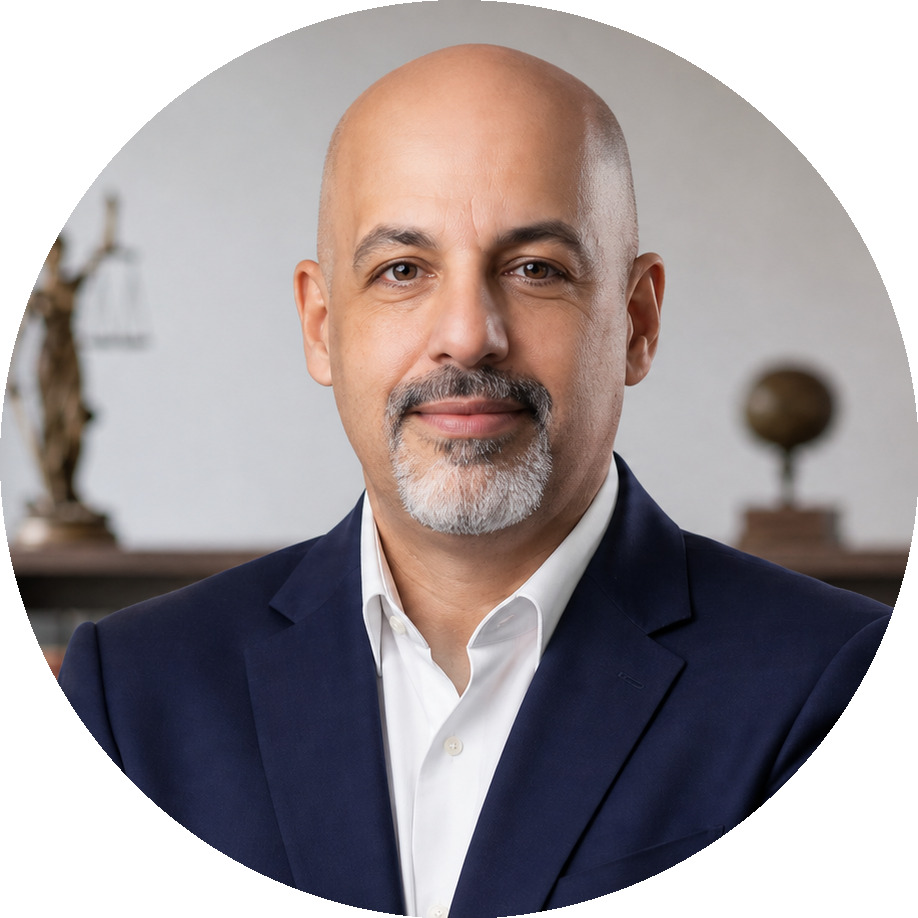

Ramos Advogados Associados
Um escritório estruturado sobre experiência, responsabilidade e relações humanas sólidas.
Construído e gerenciado por pai e filho, nosso escritório tornou-se uma extensão do nosso núcleo familiar. De modo que honestidade, empatia, humanidade, compaixão e profissionalismo são valores indispensáveis na forma como conduzimos nossa equipe e nos relacionamos com nossos clientes.
Nossa equipe
A atuação do escritório é marcada pela proximidade com o cliente, clareza na condução dos casos e compromisso técnico em cada etapa do processo.

Advogado
Trajetória profissional
Formado pela UNIFAI - PUC/SP, atua há mais de duas décadas em Direito Civil, Direito Sucessório, Direito Imobiliário e Direito Penal (especializado em Tribunal do Juri). Já figurou como sócio de outros dois escritórios, quando, há alguns anos, se separou amigavelmente de seu antigo sócio para iniciar uma sociedade com seu filho, um sonho e planejamento da família.
Trajetória profissional
Formado pela Universidade Presbiteriana Mackenzie, já trabalhava em litígios complexos antes mesmo de terminar sua graduação. Especializado em Direito Civil, Direito Bancário, Direito securitário e Direito Sucessório.
Advogado
Ramos Advogados Associados
Fale com nossa equipe pelo WhatsApp e apresente seu caso para uma orientação inicial.
FALE CONOSCO PELO WHATSAPP